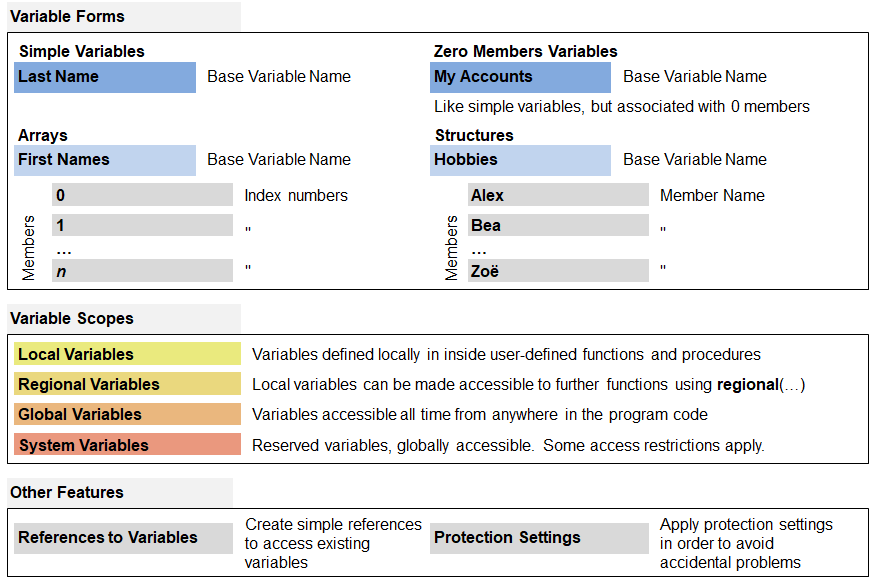

Introduction to Variables
B4P provides a unique storage model for variables. You can create simple variables like in any programming language, but also
define structures with named variable members and values as well as arrays. You can build up large and sophisticated variable trees containing
a free combination of different array and structures and work with them, without elaborate declarations needed.
